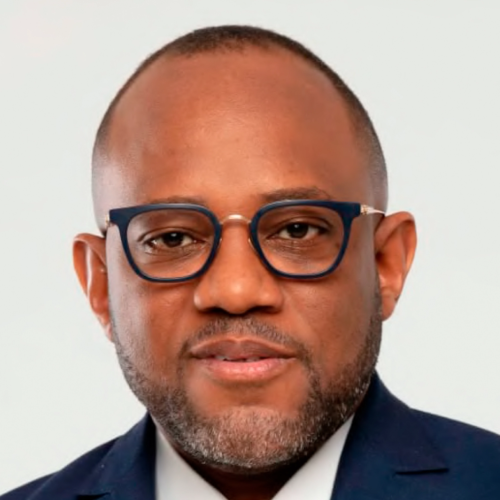

A fundação do Grupo OPAIA coincidiu com um período de profunda transformação em Angola, marcado pelo fim de décadas de conflito e pelo início do processo de reconstrução nacional. A ideia surgiu da necessidade e do compromisso de participar activamente no desenvolvimento do País, contribuindo para colmatar lacunas existentes nos sectores das infra-estruturas, indústria e serviços.
Nos primeiros anos, os principais desafios estiveram relacionados com a escassez de infra-estruturas logísticas, a limitada disponibilidade de mão-de-obra especializada e as dificuldades de acesso ao financiamento. Foi necessário actuar com visão estratégica, resiliência e capacidade de adaptação para transformar um cenário desafiante em oportunidades concretas de crescimento e desenvolvimento.
O ambiente de negócios em Angola encontra-se num processo contínuo de consolidação e transformação. Embora persistam alguns desafios, sobretudo relacionados com procedimentos administrativos e acesso ao financiamento, têm sido implementadas reformas importantes para melhorar o clima de investimento.
As principais oportunidades residem na industrialização, na substituição de importações, na agricultura e agro-indústria, nas energias renováveis e na inovação tecnológica. Os empresários que investirem na produção nacional, na criação de valor local e em soluções sustentáveis estarão melhor posicionados para aproveitar o potencial da economia angolana.
A conformidade tributária representa muito mais do que o simples cumprimento de uma obrigação legal. Trata-se de um compromisso com a transparência, a responsabilidade corporativa e a boa governação.
Para o Grupo OPAIA, a conformidade tributária representa muito mais do que o simples cumprimento de uma obrigação legal. Trata-se de um compromisso com a transparência, a responsabilidade corporativa e a boa governação.
Num contexto cada vez mais globalizado, a credibilidade fiscal constitui um factor essencial para atrair investimento, estabelecer parcerias sólidas e garantir a sustentabilidade dos negócios. O cumprimento rigoroso das obrigações fiscais reforça a confiança dos parceiros, das instituições e da sociedade, contribuindo igualmente para o desenvolvimento económico do País.
A previsibilidade fiscal é um dos principais factores considerados pelos investidores na tomada de decisões. Neste sentido, algumas medidas importantes incluem:
- a) Garantir maior estabilidade das políticas fiscais a médio e longo prazo;
- b) Simplificar procedimentos administrativos e reduzir a burocracia;
- c) Reforçar a celeridade na resolução de processos tributários e contenciosos;
- d) Alargar e aperfeiçoar os incentivos fiscais destinados aos sectores estratégicos;
- e) Continuar a modernização das plataformas digitais de cumprimento das obrigações fiscais.
O meu principal conselho é que encarem a formalização do negócio como um investimento estratégico e não como um custo adicional. A formalização permite o acesso ao financiamento, aumenta a credibilidade da empresa, facilita a celebração de contratos com entidades públicas e privadas e cria condições para um crescimento sustentável.
O cumprimento das obrigações fiscais deve ser visto como parte integrante da gestão empresarial responsável. Empresas organizadas, transparentes e fiscalmente cumpridoras conquistam maior confiança do mercado e têm melhores possibilidades de crescimento e consolidação.
As principais metas passam pela consolidação do seu parque industrial, pelo reforço da produção nacional através de projectos estratégicos, como o Complexo Industrial de Fertilizantes (Amufert) e a OPAIA Motors, bem como pela liderança em iniciativas ligadas à inovação tecnológica, à mobilidade eléctrica e às soluções energéticas sustentáveis.
A mensagem que deixo aos empresários angolanos é clara: a construção de uma economia forte, moderna e competitiva exige o compromisso de todos. A responsabilidade fiscal deve ser encarada como um dever cívico e empresarial, pois constitui um dos pilares do desenvolvimento nacional.